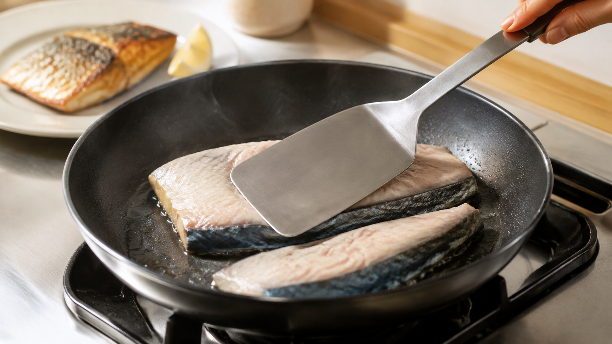

最初の30秒だけ、魚を押さえる。皮が反るのは縮むから
皮つきの魚をフライパンへ置いた瞬間、切り身の中央が持ち上がる。
端しか焼けず、真ん中の皮は白っぽいまま。
焼き色を付けようと長く待つと、今度は端だけ焦げてしまう。
これは、置き方が下手だからではない。先に熱くなった皮が縮み、まだ冷たい身との長さが合わなくなるからだ。
今日の結論
皮を平らに焼きたいなら、魚の水気を拭き、温めたフライパンへ皮を下にして置く。すぐにフライ返しで20〜30秒だけ、全体をやさしく押さえる。
切り身が平らに落ち着いたら、手を離す。その後まで押し続ける必要はない。
この方法がしているのは、魚を軟らかくすることではない。縮み始める短い時間だけ形を支え、皮と鍋の接触を切らさないことだ。
皮は、熱で短くなる網を持っている
魚の皮には、細長いたんぱく質が束になった網がある。このたんぱく質をコラーゲンという。
加熱すると、この束を保っていた形が崩れ、皮全体が短くなる。片面だけ熱で縮むシートを厚いスポンジへ貼り付けたところを想像するといい。シートだけが先に短くなれば、スポンジごとシート側へ曲がる。
22魚種の皮を25℃から70℃まで毎分1.6℃ずつ温め、動画で長さを測った2026年の研究では、皮が縮む温度は34.5〜56.2℃の範囲だった。サバ類を含め、魚が普段過ごす水温と皮の収縮温度には強い関係が見られた。
ただし、すべての魚が同じ方向へ、同じ割合で縮んだわけではない。研究では、皮の中の繊維の向きが縮み方に影響すると考えられている。切り身の場所、魚種、冷凍履歴でも反り方は変わりうる。
だから「何度で必ず反る」と一本の数字にはできない。それでも、皮を下にした直後に反りやすいことには、きちんと理由がある。
身も縮む。ただし、皮と同時ではない
皮だけが動くわけではない。
魚肉を加熱して顕微鏡で観察した研究では、水中の魚肉は40〜50℃で筋繊維の収縮が始まり、70℃まで凝集が進んだ。
タラとサケを5〜70℃で調べた1993年の研究でも、水分の流出は20〜35℃から増え、45〜50℃で最大になった。低い温度帯では皮や身をつなぐ組織が変化し、続いて筋肉のたんぱく質が縮んで水を押し出すと考えられた。
皮と身は、同じ切り身の中にあっても、熱の届く順番が違う。
皮を鍋へ当てれば、皮側が先に温まる。皮は縮み始めるが、上側の身はまだ冷たい。その時間差が、反りを作る。
最初だけ押さえると、接触が切れにくい
フライ返しで押さえても、皮の収縮そのものは止められない。
できるのは、皮が縮み始めたときに切り身を平らな位置へ保つことだ。やがて身の下側にも熱が入り、切り身は新しい形で落ち着く。そこで手を離しても、最初ほど大きく持ち上がりにくくなる。
皮全体が鍋へ触れていれば、中央にも熱が渡る。反ったまま空気が入れば、その部分には鍋からの熱が直接届かない。
ただし、20〜30秒は家庭で試しやすい目安であり、論文が決めた最適時間ではない。薄いアジなら短く、厚いサバやサケなら少し長くなることがある。時計よりも、押さえる力を抜いても中央が浮かなくなったかを見る。
強く押しつぶすのも逆効果だ。身から水分を押し出し、切り身を崩しやすくする。必要なのは重しではなく、反りに逆らう程度の軽い力だ。
切れ目を入れるより、まず押さえてみる
皮へ切れ目を入れる方法もある。縮む網を途中で切れば、反る力を分散できるからだ。
ただし、浅い切れ目を均等に入れるには慣れがいる。深すぎれば身まで割れ、焼いている途中にほどけやすい。
家庭では、まず切らずに押さえるほうが失敗を戻しやすい。厚い皮の魚や大きな切り身で何度試しても反るときだけ、皮へ5mm間隔ほどの浅い切れ目を2〜3本入れる。
今日の実験：サバの皮パリ焼き
サバは脂があり、皮の反りも観察しやすい。二切れを一緒に焼き、一方だけ最初に押さえると、違いがよく分かる。
材料（2人分）
- 加熱用の骨取りサバ切り身 2切れ（1切れ120〜150g、厚さ1.5〜2cm）
- 塩 魚の重さの約1％（2切れで3g前後）
- 米油または菜種油 小さじ1
- レモン 2切れ
焼き方
- サバの両面へ塩を振り、冷蔵庫で10分置く。表面へ出た水分を紙でしっかり拭く。冷凍品は冷蔵庫で解凍してから使う。
- フライパンへ油を広げ、中火で1分ほど温める。煙が出るほど熱くしない。
- サバを皮側から置く。すぐに幅の広いフライ返しを重ね、中央が鍋へ触れる程度の力で20〜30秒押さえる。
- 手を離しても平らなら、中火のまま3分焼く。端が焦げそうなら弱めの中火へ落とす。
- 皮の縁が褐色になり、身の下半分が白く変わったら裏返す。弱めの中火で2〜4分焼く。
- 厚い部分の中心温度を横から測り、70℃へ達したら火を止める。網または皿へ皮を上にして移し、2分置く。レモンは食べる直前に身側へ搾る。
皮を上にして休ませるのは、皿にたまる蒸気で皮をぬらさないためだ。レモンも皮へ先にかけると、せっかく乾いた表面が戻りやすい。
比べるなら、押さえる以外をそろえる
二切れで試すなら、厚さの近い部分を選ぶ。塩の量、水気の拭き方、油、火加減、焼く時間をそろえ、片方だけ最初に押さえる。
見るのは三つで十分だ。
- 焼き始め30秒で中央が何mmほど浮くか
- 焼き上がりの皮へ白い部分が残るか
- 箸でたたいたとき、中央と端で音が違うか
これは家庭での観察であり、押さえた魚が科学的に「おいしい」と証明する試験ではない。それでも、皮と鍋の接触がどれだけ変わるかは目で確かめられる。
サバは、酢や塩だけで安全にはならない
サバにはアニサキスがいる可能性がある。厚生労働省は、一般的な酢、塩、しょうゆ、わさびでは死滅せず、中心を70℃以上、または60℃で1分加熱するよう案内している。
この記事では家庭で時間を測り違えにくいよう、中心70℃を目安にした。温度計は切り身の横から最も厚い部分へ差す。
生魚に触れた手、フライ返し、皿は、焼き上がった魚へ使い回さない。残った魚は粗熱を長く放置せず、2時間以内を目安に冷蔵庫へ入れ、翌日までに中心まで十分に温め直す。
反りは、最初の数十秒で扱う
皮つき魚が反るのは、失敗ではなく、熱で皮と身の長さが変わる途中の動きだ。
水気を拭く。皮から置く。浮こうとする間だけ、やさしく押さえる。
次に魚を焼くときは、火加減を変える前に、最初の30秒を変えてみよう。
参考文献
- Akita M, et al. Relationship between fish skin shrinkage and a fish’s physiological temperature according to movie analysis. Fisheries Science. 2026;92:717-724. https://doi.org/10.1007/s12562-026-01976-9
- 魚の調理に関する研究. 家政学雑誌. 1976;27(7):484-490. https://www.jstage.jst.go.jp/article/jhej1951/27/7/27_7_484/_article/-char/ja
- Ofstad R, Kidman S, Myklebust R, Hermansson AM. Liquid Holding Capacity and Structural Changes During Heating of Fish Muscle: Cod and Salmon. Food Structure. 1993;12(2):Article 4. https://digitalcommons.usu.edu/foodmicrostructure/vol12/iss2/4/
- Wada Y, Yamazaki K. Studies on the Baking Quality in Cookery (Part 6): Experiments on Roasting Fish in the Electric Fish Roaster, II. 1969;20(3):169-174. https://www.jstage.jst.go.jp/article/jhej1951/20/3/20_3_169/_article/-char/ja
- 厚生労働省. アニサキスによる食中毒を予防しましょう. https://www.mhlw.go.jp/stf/seisakunitsuite/bunya/0000042953.html
※本記事は家庭調理の一般情報であり、魚種、切り身の厚さ、冷凍履歴、フライパンによる差をなくすものではない。